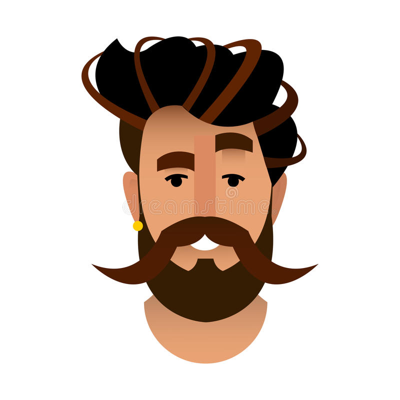

Marcin Łyszczarz - domowa robiona w ramach szkolenie WTF
Od początku dnia minęło:
Kim jestem ?

Na codzień akustyk w Promost. Opracowuję Raporty ooś. Początkujący prgramista frontendowy. Biorę udział w szkolenio WTF Ponadto interesuję się motoryzacją oraz sportem a zwłaszcza piłką nożną. Od czasu do czasu sam kopię. Przejdź do notatek
Notatki z WTF: Co ten frontend
Jak stworzyć HTML-a?
Tworzenie zgodnie ze standardem HTML-a to sztuka, któą do perfekcji opanowało niewielu. Jeśli chcesz stać się częścią tej grupy, musisz wykazać się otwartą głową i duża ilością wolnego czasu..
Lista fajnych znaczników
UL
OL
SECTION
Analiza teści
Podział na sekcje
Stwórz pierwszą wersję kodu
div
Opis mojego diva
article
Opis mojego artykułu
Kroki do zrobienia dobrego HTML'a
Analiza teści
Podział na sekcje
Stwórz pierwszą wersję kodu
Pisanie i podłączanie CSS z linka zewnętrznego
Aby nadać styl konieczne jest wybranie poprzez selektor elementu, który ma być stylowany Linki zewnętrzne stylów podpinamy poprzez znacznik link rel="stylesheet" href="" class="" Nagłówki, artykuły, paragrafy ostylowane.
Pisanie i podłączanie CSS z linka zewnętrznego
Aby nadać styl konieczne jest wybranie poprzez selektor elementu, który ma być stylowany Linki zewnętrzne stylów podpinamy poprzez znacznik link rel="stylesheet" href="" class="" Nagłówki, artykuły, paragrafy ostylowane.
Pisanie i podłączanie CSS z linka zewnętrznego
Aby nadać styl konieczne jest wybranie poprzez selektor elementu, który ma być stylowany Linki zewnętrzne stylów podpinamy poprzez znacznik link rel="stylesheet" href="" class="" Nagłówki, artykuły, paragrafy ostylowane.